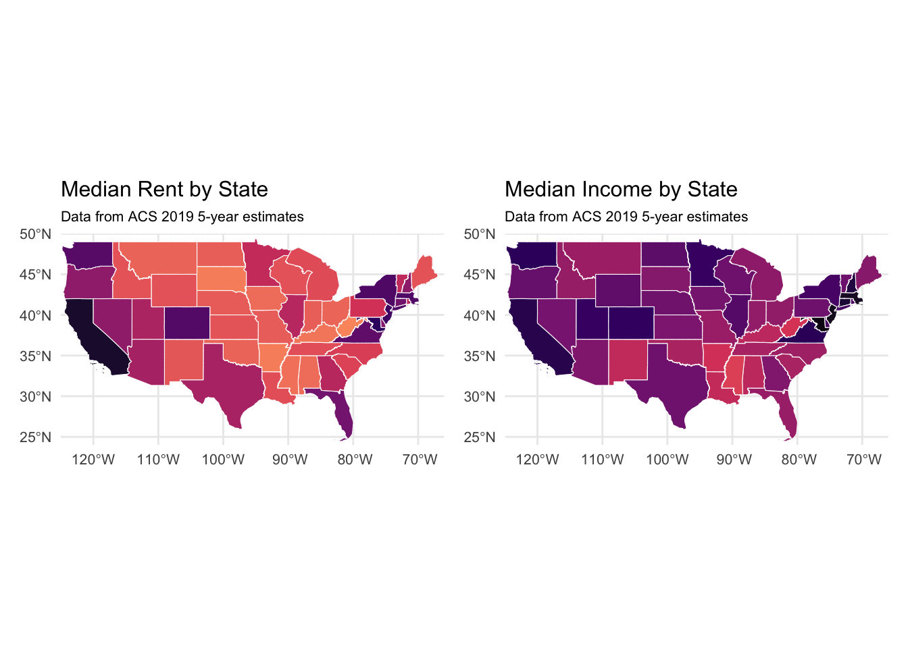
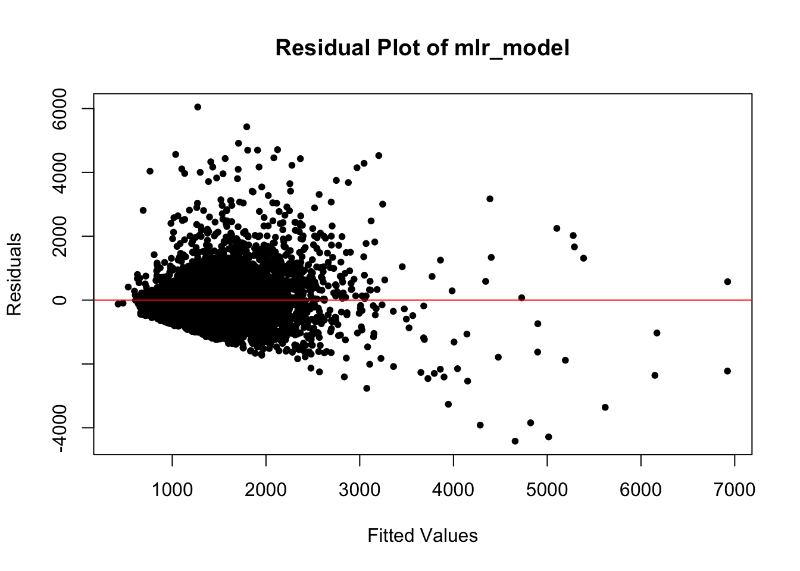
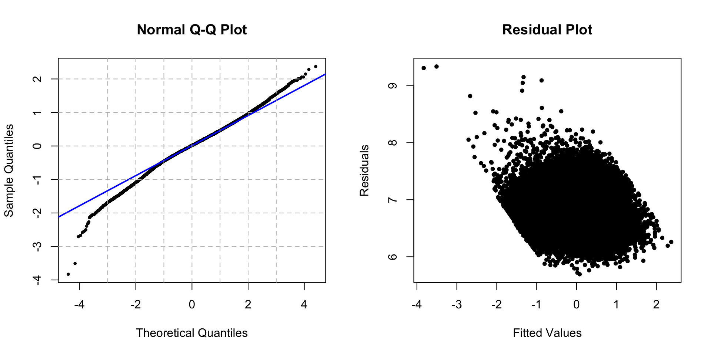
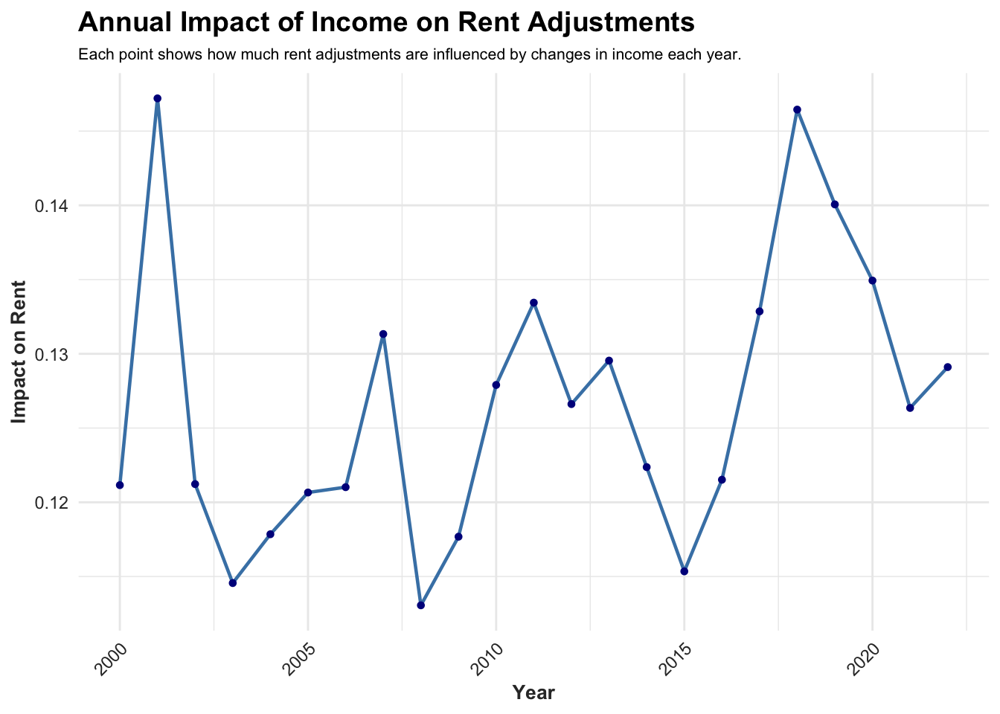

Analysis
This page details the models we employed to explore the relationship between income and rent, along with discussions on the models’ reliability and validity.
Research Question and Motivation
Motivation
The primary focus of this research is to investigate the relationship between individual income levels and rental expenditures. This analysis is motivated by the need to understand the financial burdens of rent relative to income and how this impacts different demographic groups over time.
Preliminary observations from diagrams comparing median rent and median income by state indicate that states with higher median incomes generally tend to have higher median rents. This pattern suggests a potential correlation between these two variables, reinforcing the importance of examining how these dynamics vary across different states and demographic groups to inform policy and economic decisions.
Objectives
- Relationship Exploration: Aimming for determining how changes in income levels affect rental spending. This includes examining whether the relationship is strictly linear or if there are nonlinear dynamics that better capture the fluctuations in rental expenditures as income varies.
- Quantitative Analysis: The goal is to quantify the relationship precisely. For example, we seek to estimate the increase in rental expenditure for every thousand-dollar increase in income or the percentage change of rent expenditure for every one percent increase in income (elasticity).
- Demographic Variance: The study will also consider racial differences to identify how income’s impact on rent varies among different racial groups.
- Temporal Analysis: Employing a time series regression model allows us to account for changes over time, providing a dynamic perspective on the income-rent relationship.
Models and Inferences (First dataset)
Outline of models used in class blogs
Multiple Linear Regression Model (Detailed in Class Blog 4)
Log-Log Regression Model(Detailed in Class blog 4)
Log-Log Regression Model with interaction terms (Detailed in Class blog 4)
1. Multiple Linear Regression Model
Model Overview:
- This model builds upon the initial simple linear regression framework by incorporating additional confounding variables to refine our analysis.
Model Findings:
- A $1,000 increase in total income (INCTOT) is associated with an average increase of 5.2 in gross rent (RENTGRS), assuming other variables are constant.
Statistical Performance:
| r.squared | adj.r.squared | sigma | statistic | p.value | df | logLik | AIC | BIC | deviance | df.residual | nobs |
|---|---|---|---|---|---|---|---|---|---|---|---|
| 0.2317473 | 0.2284616 | 824.1282 | 70.53243 | 0 | 22 | -42013.05 | 84074.11 | 84231.31 | 3493739342 | 5144 | 5167 |
The R-squared value of 0.23 indicates that approximately 23% of the variance in the dependent variable (gross rent) is accounted for by the model, which is considered acceptable in the context of social-economic studies.
A F-statistic value of 70 and a p-value of 0 confirm the statistical significance of the model, suggesting that the regression results are highly unlikely to occur by chance.
Variable Selection and model refinement:
- A correlation matrix was used to identify
control variablesand to detect potentialmulti-collinearity issues.
| INCTOT | ROOMS | NFAMS | AGE | FTOTINC | RENTGRS | |
|---|---|---|---|---|---|---|
| INCTOT | 1.0000000 | -0.0149409 | -0.0313099 | -0.0077964 | 0.7282638 | 0.3329946 |
| ROOMS | -0.0149409 | 1.0000000 | 0.1631221 | -0.0439707 | 0.1083906 | 0.1406264 |
| NFAMS | -0.0313099 | 0.1631221 | 1.0000000 | -0.1405046 | -0.0924716 | 0.0881204 |
| AGE | -0.0077964 | -0.0439707 | -0.1405046 | 1.0000000 | -0.0768613 | -0.0870537 |
| FTOTINC | 0.7282638 | 0.1083906 | -0.0924716 | -0.0768613 | 1.0000000 | 0.4448424 |
| RENTGRS | 0.3329946 | 0.1406264 | 0.0881204 | -0.0870537 | 0.4448424 | 1.0000000 |
- A review of multicollinearity prompted the removal of
FTOTINC(family income) to prevent model overfitting.
| GVIF | Df | GVIF^(1/(2*Df)) | |
|---|---|---|---|
| INCTOT | 2.317240 | 1 | 1.522248 |
| KITCHEN | 1.023481 | 1 | 1.011673 |
| ROOMS | 1.108739 | 1 | 1.052967 |
| NFAMS | 1.111046 | 1 | 1.054062 |
| AGE | 2.074406 | 1 | 1.440280 |
| MARST | 1.856902 | 5 | 1.063846 |
| RACE | 1.198063 | 8 | 1.011358 |
| EMPSTAT | 1.576945 | 2 | 1.120609 |
| FTOTINC | 2.385884 | 1 | 1.544631 |
| REGION_CLASSIFIED | 1.130442 | 3 | 1.020645 |
After fitting the multiple linear regression (MLR) model,
Kitchenwas removed due to its statistical insignificance, indicated by a high p-value.Employment Status (EMPSTAT), although not as critical, also showed a non-significant p-value and is suspected to interact with variables likeIncome (INCTOT)orFamily_income(FTOTINC). This interaction will be explored further.
Model Discussion :

The plot indicates a potential non-linear relationship and heteroscedasticity, evident from the increase in variability with the size of the fitted values.
Some points notably deviate from the main cluster, particularly in the bottom left and top right, suggesting they could be potential outliers or leverage points.
2. Log-Log Regression Model
Model Overview:
As the problems elaborated on the data page and the discussion in last section:
Predictor and response variables underwent log transformation to correct for right skewness.
The outliers was excluded (three standard deviations away from the response and predictor variable).
Model Findings:
- The model suggests that a 10% increase in income is predicted to raise rent by an average of 1.334% (defined as elasticity in economic terms), with all other variables held constant, indicating the elasticity effect of income on rent.
Statistical Performance:
| r.squared | adj.r.squared | sigma | statistic | p.value | df | logLik | AIC | BIC | deviance | df.residual | nobs |
|---|---|---|---|---|---|---|---|---|---|---|---|
| 0.2267776 | 0.2234707 | 0.5072099 | 68.5763 | 0 | 22 | -3812.614 | 7673.227 | 7830.428 | 1323.355 | 5144 | 5167 |
An adjusted R-squared value of 0.27, while modest, is considered adequate within the complex realms of social science and economics.
A very low p-value signifies the statistical significance of the model’s predictors.
The sigma value’s reduction points to a more precise model, albeit comparisons with non-logarithmic models are not straightforward due to scale differences.
Model Discussion :
Linearity and Homoscedasticity:
The residuals, predominantly centered around the zero line with no systematic pattern, indicate an effective model that captures the relationship between predictors and the response variable.
While the spread is generally consistent, minor widening at the extremes suggests typical heteroscedasticity in higher income or rent brackets.
Nonetheless, a few potential outliers common in large economic datasets do not significantly affect the robustness of the central trend.
Normality of Residuals:
- The bulk of residuals align with the normality line on the Q-Q plot, with slight deviations at both ends, which is often seen in economic data due to outliers, do not substantially affect the model’s predictive capability.
IID Errors:
| Statistic | p_Value |
|---|---|
| 1.977496 | 0.2092356 |
- For Durbin-Watson Statistic, the result statistic value close to 2 indicates no autocorrelation, implying that the errors are independent. And for a random scatter of residuals, without visible trends or cycles, supports the assumption of IID errors.
Multicollinearity:
| GVIF | Df | GVIF^(1/(2*Df)) | |
|---|---|---|---|
| log_INCTOT | 1.298351 | 1 | 1.139452 |
| ROOMS | 1.069938 | 1 | 1.034378 |
| NFAMS | 1.088234 | 1 | 1.043185 |
| AGE | 2.109694 | 1 | 1.452479 |
| MARST | 1.790805 | 5 | 1.059997 |
| RACE | 1.193223 | 8 | 1.011102 |
| EMPSTAT | 1.844666 | 2 | 1.165412 |
| REGION_CLASSIFIED | 1.119686 | 3 | 1.019020 |
- The adjusted GVIF values, being all near or below the threshold of 1.5 after taking the root, demonstrate that the multicollinearity is likely not distorting the estimates in the regression model significantly.
Upon reviewing these diagnostic measures, the model is deemed well-fitted, and the derived conclusions are robust and reliable.
3. Enhanced Log-Log Regression Model with Interaction Terms
Model Overview
- This model is built upon the foundation established in Section 3. This section explores nonlinearity further.
Model Overview and Model Refinement:
- The interaction term
EMPSTAT * FTOTINC (employment status * family income)has been introduced to investigate the suspected interaction effect.
Statistical Performance:
| r.squared | adj.r.squared | sigma | statistic | p.value | df | logLik | AIC | BIC | deviance | df.residual | nobs |
|---|---|---|---|---|---|---|---|---|---|---|---|
| 0.2727009 | 0.2691641 | 0.4920608 | 77.10474 | 0 | 25 | -3654.429 | 7362.857 | 7539.709 | 1244.758 | 5141 | 5167 |
Most predictors show statistical significance, in general, with no detrimental impact on the model’s other variables as reflected in their p-values.
But the p-value for
EMPSTAT Unemployed:FTOTINC (umployment status * family income)is slightly above 0.05, suggesting it has borderline statistical significance. Therefore, adding interaction term needs to have further consideration.
Model Discussion:
- The residual plot indicates that the model without interaction terms performs better than the log-log regression with interaction terms. This residual plot does not show the performance as well as the section 3.
Therefore, although this model’s conclusions offer an extension to our understanding of the economic factors influencing rent prices in section 3, we still take the log_log (Section 3) model for further analysis.
Models and Inferences (Merged dataset)
Outline
Time series model (Detailed in Class blog 7)
Log-Log Regression Model by YEAR (Detailed in Class blog 5)
Longitudinal Log-Log Regression Model by Race (Detailed in Class blog 6)
1.Time series model
Model Overview:
This time series model accounts for trends, and autocorrelation in data over time, which taking the consideration of the time-dependent changes and patterns inherent in the data that the previous model not captured.
Random Effects term introduces a random intercept for different regions (REGION_CLASSIFIED), allowing the model to account for variations in rent prices that are region-specific but not explained by the model’s fixed effects.
Model Findings:
- The model suggests that a 10% increase in income is predicted to raise rent by an average of 1.412%, with all other variables held constant, indicating income’s elasticity effect on rent.
Statistical performance:
Most predictors have relatively low standard errors, suggesting a high degree of precision in the estimates.
Also, a statistic value in log_INCTOT is 83.46, suggesting that income is a highly significant predictor of rent.
Model discussion

Residual plot
The residual plot indicates potential heteroscedasticity, as there is a clear pattern where the residuals spread increasingly around the zero line and become more negative as the fitted values increase. This suggests that the variance of the residuals is not constant, which could impact the reliability of the model’s predictions at higher income levels.
But we consider the pattern in this plot reflects the socio-economic dynamics of high-income individuals’ housing decisions.
As income significantly increases, people tend to purchase rather than rent homes, affecting the relationship between income and rental expenditures. This creates a ceiling effect on rental payments, leading to the model’s residuals deviating negatively from the expected line at higher income levels.
Moreover, even the most expensive rental properties have a price cap, meaning that extremely wealthy individuals may rent homes within the same price range as those who are less affluent but still wealthy. This results in a scenario where, past a certain income threshold, further increases in income do not correspond to higher rents.
Combined, these factors explain why the model’s residuals show such deviations at the upper income levels.
Q_Q plot
The points mostly follow the line in the center, indicating that residuals are generally well-modeled.
But the tails, especially the upper right, deviate from the line, suggesting the residuals have a distribution with more extreme values than a normal distribution would predict.
** Due to the limitations suggested, the log-log transformation is maintained superior. However, this model serves as a useful reference; the conclusions drawn closely align with those in Section 3, showing no significant deviation.**
2. Log-Log Regression Model by YEAR
Model Overview:
- This analysis implements the validated Log-Log regression approach on annual data segments to assess temporal trends and variations.
Model Findings:

Observations show peaks in coefficient estimates, notably after 2000 and before 2020, with subsequent troughs suggesting potential corrective periods.
The coefficient shows dropping down during the Covid-19 period.
The coefficient trend exhibits cyclicity with no monotonic progression, featuring multiple peaks and valleys, implying a potential cyclical influence on the income-rent relationship.
Statistical Performance:
Click here to view the summary table for the model of each Year.
All models are statistically validated, there is a noticeable exception in the MARSTSeparated category for the year 2022 shows to be statistically insiginificant, but others are all good .
R-squared values exhibit minor fluctuations over time, signifying a stable degree of explained variability in the response variable by the model.
The trends in model deviance require additional context for clear interpretation, while a gradual decrease in df.residual suggests either an increase in model parameters or variations in data availability over time.
3. Longitudinal Log-Log Regression Model by Race
Model Overview:
- This model extended the 2022 dataset analysis (some coefficients not statistically sigificant so dropped) to explore how the rent-income relationship for each racial group has evolved from 2000 to 2022.

- From the plot, we sampled 1000 individuals from each racial group in various regions to analyze their impact on rental expenditures. The visualization reveals variations in rental spending across races within each region, emphasizing disparities that are vital for guiding regional housing policies and economic strategies.
Model Findings:
Click here to view the plot for the cofficients across Years for each race.
Alaska Native: Shows minor fluctuations around zero, with both positive and negative coefficients, indicating inconsistent trends over the years.
American: This category has NA values, suggesting incomplete data, making it hard to discern a clear trend.
Chinese: Generally has higher positive coefficients compared to other groups, particularly noticeable in later years, indicating a strong positive elasticity and association with income in those years.
Japanese: Has few missing values but otherwise presents mostly positive coefficients, with a notable spike in recent years.
Islander: Also features both positive and negative coefficients with considerable variability.
Other race, nec: Shows a mix of positive, negative, and NA values, making a clear trend difficult to establish.
Two or more races: This group generally has positive coefficients, with a few exceptions, suggesting a fairly consistent positive association and elasticity with income.
Whites: Present a range of coefficients, mostly positive with some fluctuations, but generally indicate a positive association and elasticity with income.
Statistical Performance:
Click here to view the summary table of each race across Years.
- The p-value of 0 consistently across all races and years suggests that the models are statistically significant. This means the results are unlikely to have occurred by chance, and there is a statistically significant relationship between the dependent and independent variables in the models used.
Conclusion
Income and Rent Expenditure (2022): Latest data indicates that a 10% increase in income is predicted to raise rent expenditure by approximately 1.334%, with other variables constant, showcasing the elastic nature of rent in response to changes in income.
Time Effect and Autocorrelation Considerations: When accounting for temporal effects and autocorrelation, a 10% increase in income is expected to lead to a 1.467% rise in rent, affirming the pronounced elasticity of rent costs relative to income fluctuations.
Trends Over Years: Analysis of yearly data reveals that coefficient estimates peaked notably between 2000 and 2020, followed by declines during the COVID-19 period, indicating cycles of increase and corrective adjustments in the relationship between income and rent.
Racial and Ethnic Differences: The association between income and rent varies significantly among racial and ethnic groups. For example, Chinese and White groups have displayed a consistently strong positive association and elasticity with income in recent years, highlighting disparities in economic outcomes across different demographics.
The validity, limitations, and details of the models and statistical analysis used are thoroughly discussed in the respective sections above.